КОНТРОЛЬНАЯ РАБОТА № 1
ВАРИАНТ 1
1. Расположите события в хронологическом порядке.
A) издание манифеста «Об усовершенствовании государственного порядка»
Б) подписание договора о безвозмездной аренде Россией на 25 лет Ляодунского полуострова и Порт-Артура
B) открытие I Государственной думы
Г) вступление на престол Николая II
Запишите получившуюся последовательность букв.
2. Установите соответствие между событиями и годами.
СОБЫТИЯ
A) подписание Портсмутского мирного договора
Б) создание РСДРП
B) начало работы IV Государственной думы
ГОДЫ
1) 1898 г.
2) 1905 г.
3) 1907 г.
4) 1912 г.
Запишите цифры, соответствующие выбранным ответам.
3. Прочитайте отрывок из императорского манифеста и выберите два верных ответа.
Объявляем всем Нашим верноподданным:
Глубокой скорбью наполняет сердце Наше смута, происшедшая в селениях некоторых уездов, где крестьяне чинят насилие в имениях...
Единственный путь прочного улучшения благосостояния крестьян есть путь мирный и законный, и Мы всегда ставили первейшей Нашей заботой облегчение положения крестьянского населения.
В последнее время Нами было повелено собрать и представить Нам сведения о тех мерах, которые можно было бы немедленно принять на пользу крестьян. По рассмотрению этого дела Нами решено:
...Выкупные платежи с крестьян бывших помещичьих, государственных и удельных... прекратить...
...Дать Крестьянскому поземельному банку возможность успешнее помогать малоземельным крестьянам в расширении покупкой площади их землевладения, увеличив для сего средства банка и установив более льготные правила для выдачи ссуд...
1) Данный манифест был издан в период Первой российской революции.
2) Платежи, о которых идёт речь, крестьяне платили с 1850-х гг.
3) Автор манифеста выражает недовольство произволом помещиков в отношении крестьян.
4) Банк, названный в данном отрывке, был создан в период правления Александра III.
5) Автор манифеста заявляет, что улучшение положения крестьян — это новое направление в его политике.
4. Установите соответствие между событиями (процессами, явлениями) и участниками этих событий (процессов, явлений).
СОБЫТИЯ (ПРОЦЕССЫ, ЯВЛЕНИЯ)
A) создание конституционно-демократической партии
Б) Русско-японская война
B) II съезд РСДРП
УЧАСТНИКИ
1) А.Н. Куропаткин
2) Л. Мартов
3) П.Д. Святополк-Мирский
4) П.Н. Милюков
Запишите цифры, соответствующие выбранным ответам.
5. Какие утверждения о развитии русской литературы в конце XIX — начале XX в. являются верными? Укажите два утверждения.
1) Одним из известнейших писателей начала XX в. был Ф.М. Достоевский.
2) Начало XX в. вошло в историю как золотой век русской литературы.
3) «Пощёчина общественному вкусу», «Дохлая Луна», «Рыкающий Парнас» — названия сборников поэтов-символистов.
4) Н.С. Гумилёв был поэтом-акмеистом.
5) Творчество А.П. Чехова относится к началу XX в.
6. Что из приведённого ниже появилось (было создано) в период 1900-1914 гг.?
1) опера «Руслан и Людмила»
2) здание Ярославского вокзала в Москве
3) картина «Явление Христа народу»
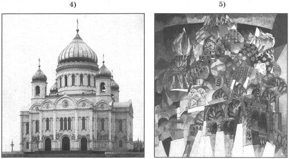
7. Рассмотрите изображение и укажите два верных суждения.
1) Участником плавания, которому посвящена медаль, был адмирал С.О. Макаров.
2) В ходе плавания, которому посвящена медаль, русские корабли дважды пересекли экватор.
3) В войне, в ходе которой было совершено плавание, изображённое на медали, Англия была союзницей России.
4) Договор об окончании войны, событиям которой посвящена данная медаль, был подписан в Санкт-Петербурге.
5) Плавание, которому посвящена медаль, окончилось сражением, в котором русские эскадры потерпели поражение.
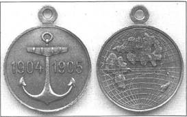
Рассмотрите карту и выполните задания 8—10.
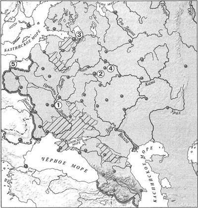
8. Штриховкой на карте выделена территория:
1) на которой количество крестьянских хозяйств, перешедших в 1907-1916 гг. к участковому землепользованию (хутора, отруба), было наибольшим
2) в наибольшей степени пострадавшая от неурожая 1911 г.
3) на которой количество крестьянских хозяйств, перешедших в 1907-1916 гг. к участковому землепользованию (хутора, отруба), было наименьшим
4) на которой преобладали старые районы хуторского расселения
9. Какой цифрой на карте обозначен город, в котором произошли события, получившие название «Кровавое воскресенье»?
10. Запишите название государства, обозначенного на карте цифрой 5.
Ответ:
11. Запишите название партии, о которой идёт речь.
Крупная политическая партия либерального направления в Российской империи, образованная в 1905 г., состояла в основном из чиновников, помещиков и представителей крупной торговой промышленной буржуазии.
Ответ:
12. Прочитайте отрывок из нормативного акта и запишите название месяца, когда этот нормативный акт был издан.
К прискорбию нашему, значительная часть состава Второй Государственной думы не оправдала ожиданий наших. Не с чистым сердцем, не с желанием укрепить Россию и улучшить её строй приступили многие из присланных от населения лиц к работе, а с явным стремлением увеличить смуту и способствовать разложению государства.
Деятельность этих лиц в Государственной думе послужила непреодолимым препятствием к плодотворной работе. В среду самой Думы внесён был дух вражды, помешавший сплотиться достаточному числу членов её, желавших работать на пользу родной земли.
По этой причине выработанные правительством нашим обширные мероприятия Государственная дума или не подвергала вовсе рассмотрению, или замедляла обсуждением, или отвергала, не остановившись даже перед отклонением законов, каравших открытое восхваление преступлений и сугубо наказывавших сеятелей смуты в войсках...
Всё это побудило нас указом, данным правительствующему Сенату... Государственную думу второго созыва распустить, определив срок созыва новой Думы...
Прочитайте отрывок из сочинения историка и выполните задание 13.
Согласно данным переписи населения 1897 г., наиболее представительными среди этносов империи по своей численности и распространённости по территории проживания были русские — более 55 млн, или 44 %. Вместе с ближайшими себе по языку и культуре украинцами (22 млн, или 17%) и белорусами (около 6 млн, или 5%) они составляли большинство населения страны — свыше 83 млн, или 66%. К 1917 г. их совокупная численность превысила 114 млн. Из других национальностей выделялись поляки (около 8 млн человек, к 1917 г. — свыше 11 млн), татары и тюркские народы (около 14 млн человек, к 1917 г. — почти 17 млн), евреи (5 млн человек, к 1917 г. — свыше 7 млн).
13. Рассмотрите таблицу, составленную на основе данных, приведённых в отрывке (заголовки строк и столбцов в таблице обозначены буквами).
Запишите заголовок столбца таблицы, обозначенного буквой «В».
|
А |
Б |
В |
|
|
Г |
55 |
22 |
б |
|
Д |
44 |
17 |
5 |
Ответ:
14. Заполните пропуск в схеме.
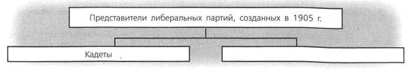
Ответ:
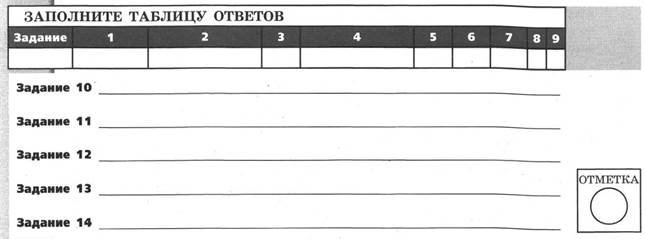
ВАРИАНТ 2
1. Расположите события в хронологическом порядке.
А) Кровавое воскресенье
Б) подписание соглашения между Россией и Англией о разграничении интересов в Иране, Афганистане и Тибете
В) создание РСДРП
Г) денежная реформа С.Ю. Витте
Запишите получившуюся последовательность букв.
2. Установите соответствие между событиями и годами.
СОБЫТИЯ
A) образование Партии социалистов-революционеров (ПСР)
Б) убийство П.А. Столыпина
B) международная конференция в Гааге
ГОДЫ
1) 1899 г.
2) 1902 г.
3) 1906 г.
4) 1911 г.
Запишите цифры, соответствующие выбранным ответам.
3. Прочитайте отрывок из императорского манифеста и выберите два верных суждения.
Великий обет царского служения повелевает Нам всеми силами разума и власти Нашей стремиться к скорейшему прекращению столь опасной для государства смуты. Повелев подлежащим властям принять меры к устранению прямых проявлений беспорядка, бесчинств и насилий... Мы... признали необходимым объединить деятельность высшего Правительства.
На обязанность Правительства возлагаем Мы выполнение непреклонной Нашей воли:
1. Даровать населению незыблемые основы гражданской свободы на началах действительной неприкосновенности личности, свободы совести, слова, собраний и союзов.
2. Не останавливая предназначенных выборов в Государственную думу, привлечь теперь же к участию в Думе, по мере возможности, соответствующей краткости остающегося до созыва Думы срока, те классы населения, которые ныне совсем лишены избирательных прав, предоставив этим дальнейшее развитие начала общего избирательного права вновь установленному законодательному порядку.
1) Данный манифест был издан в 1906 г.
2) Это первый нормативный акт, изданный императором, в котором идёт речь о Государственной думе.
3) По данному манифесту населению предоставлялось право свободно выражать свои мысли.
4) Согласно данному манифесту расширялся состав избирателей Государственной думы.
5) Издание данного манифеста стало последствием вооружённого восстания в Москве.
4. Установите соответствие между событиями (процессами, явлениями) и участниками этих событий (процессов, явлений).
СОБЫТИЯ (ПРОЦЕССЫ, ЯВЛЕНИЯ)
A) шествие к Зимнему дворцу 9 января 1905 г.
Б) Цусимское сражение
B) создание партии «Союз 17 октября»
УЧАСТНИКИ
1) З.П. Рожественский
2) К.П. Победоносцев
3) А.И. Гучков
4) Г.А. Гапон
Запишите цифры, соответствующие выбранным ответам.
5. Какие утверждения о развитии российской науки в начале XX в. являются верными? Укажите два утверждения.
1) П.Н. Лебедев является автором учений о биосфере и ноосфере.
2) Научная деятельность И.И. Мечникова непосредственно связана с развитием отечественной космонавтики.
3) И.П. Павлов создал учение о высшей нервной деятельности, об условных рефлексах.
4) Начало российского самолётостроения непосредственно связано с именем Н.Е. Жуковского.
5) Историку В.О. Ключевскому была присуждена Нобелевская премия.
6. Что из приведённого ниже появилось (было создано) в период 1900-1914 гг.?
1) роман «Преступление и наказание»
2) пьеса «Вишнёвый сад»
3) роман «Что делать?»
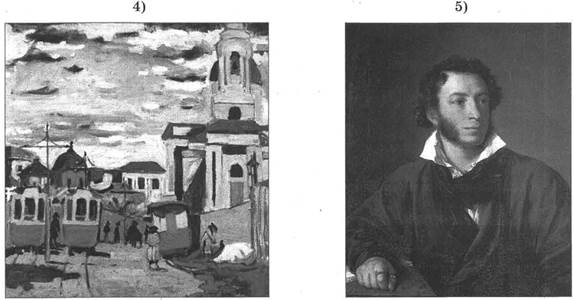
7. Рассмотрите изображение и укажите два правильных суждения.
1) Юбилей события, которому посвящён данный значок, отмечался в 1980-х гг.
2) На съезде, которому посвящён данный значок, произошёл раскол РСДРП.
3) На значке указано название течения в партии, которое возглавлял В.И. Ленин.
4) Участником съезда, которому посвящён значок, был А.И. Гучков.
5) Съезд, которому посвящён данный значок, проходил в Брюсселе и Лондоне.
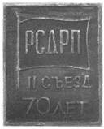
Рассмотрите карту и выполните задания 8—10.
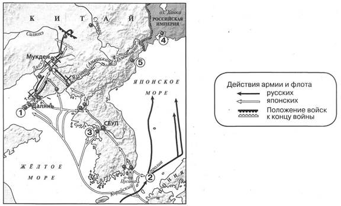
8. Укажите год, когда начались военные действия, обозначенные на карте стрелками.
1) 1899 г.
2) 1904 г.
3) 1907 г.
4) 1912 г.
9. Какой цифрой на карте обозначено место боя крейсера «Варяг» и канонерской лодки «Кореец» с японской эскадрой?
10. Запишите название города, обозначенного на карте цифрой 1.
Ответ:
11. Запишите термин, о котором идёт речь.
Земельный участок, выделенный из общинной земли в результате Столыпинской аграрной реформы 1906 г. в единоличную крестьянскую собственность без переноса усадьбы.
Ответ:
12. Прочитайте отрывок из нормативного акта и запишите год, когда этот нормативный акт был издан.
...В местностях, объявленных на военном положении или в положении чрезвычайной охраны, генерал-губернаторам, главноначальствующим или облечённым их властью лицам предоставляется в тех случаях, когда учинение лицом гражданского ведомства преступного деяния является настолько очевидным, что нет надобности в его расследовании, передавать обвиняемого военно-полевому суду, с применением в подлежащих случаях наказания по законам военного времени, для суждения в порядке, установленном нижеследующими правилами:
...Военно-полевой суд учреждается по требованию генерал-губернаторов, главноначальствующих...
...Суд немедленно приступает к разбору дела и оканчивает рассмотрение оного не далее как в течение двух суток.
...Приговор, по объявлении на суде, немедленно вступает в законную силу и безотлагательно, и во всяком случае не позже суток, приводится в исполнение по распоряжению военных начальников, указанных в статье первой настоящих правил...
Ответ:
Прочитайте отрывок из сочинения историка и выполните задание 13.
Число крестьянских выступлений начинает исчисляться не десятками, а сотнями, в несколько раз превосходя уровень начала века. В 1900 г. — 33, 1901 г. — 119, 1902 г. — 358, 1903 г. — 533, 1904 г. — 162 выступления. В крестьянском движении начала 1900-х гг. чаще встречались активные формы борьбы: захват крестьянами помещичьей земли, увоз хлеба из помещичьих амбаров, погромы и поджоги дворянских имений. Это приводило к участившимся фактам применения войск для подавления крестьянских выступлений. В 1900 г. войска вызывались 6 раз, в 1901 г. — 12, а в первой половине 1902 г. — уже 17 раз.
Настоящий взрыв крестьянского движения пришёлся на 1902 г., давший трёхкратное увеличение выступлений. Причиной этого был страшный неурожай 1901 г. и голод, охвативший 20 губерний с населением в 24 млн человек. Движение началось в марте—апреле в Полтавской и Харьковской губерниях, распространившись на 165 сёл с населением более 150 тыс. человек. Восставшие громили помещичьи имения, захватывали хлеб, семена, скот, землю. Всего пострадало 104 экономии.
13. Рассмотрите таблицу, составленную на основе данных, приведённых в отрывке (заголовки строк и столбцов в таблице обозначены буквами).
Запишите заголовок строки таблицы, обозначенной буквой «Д».
|
А |
Б |
В |
|
|
Г |
33 |
119 |
358 |
|
Д |
б |
12 |
17 |
Ответ:
14. Заполните пропуск в схеме.
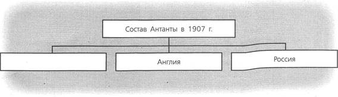
Ответ:
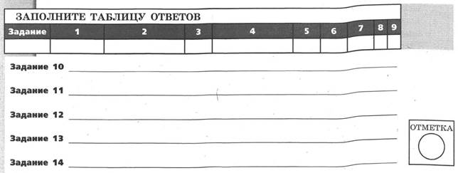
КОНТРОЛЬНАЯ РАБОТА № 2
ВАРИАНТ 1
1. Курс, проводимый Председателем Совета министров с 1906 г., вошёл в историю под названием «порядок и реформы». Назовите Председателя Совета министров, проводившего этот курс. Укажите одну любую меру, принятую им для достижения «порядка». Почему курс на достижение «порядка» в этот период был необходим? Укажите одну причину.
2. Существует точка зрения, что события конца XIX в. на Дальнем Востоке способствовали обострению международной обстановки в этом регионе. Приведите два аргумента в подтверждение данной точки зрения.
3. Прочитайте отрывок из воспоминаний современника событий и выполните задания.
В 8 1/2 часов вечера министр внутренних дел собрал у себя совещание. [Он] в немногих словах посвятил присутствующих в происходящие события. Градоначальник Фулон доказывал невозможность допустить рабочих до Зимнего дворца, при этом напомнил ходынскую катастрофу. Товарищ министра Дурново поднял было вопрос о том, известно ли властям, что рабочие вооружены, но этот весьма важный по существу вопрос, даже самый кардинальный вопрос, лишь скользнул по собранию и как-то затушевался. Растерявшийся градоначальник ничего толком не знал и ничего разъяснить не мог. Было решено, наконец, рабочих ко дворцу не допускать, при неповиновении действовать оружием, Гапона же арестовать. На последнее постановление Фулон ответил, что едва ли это представится возможным сделать. Он знал, что говорил: он за несколько дней перед этим дал Гапону своё «солдатское» слово, что он его не арестует, и генерал Фулон сдержал своё слово, хотя и вопреки приказанию своего высшего начальника министра внутренних дел...
С утра 9 января со всех окраин города двинулись к Зимнему дворцу толпы рабочих... Войска встретили рабочие толпы залпами и разогнали их. Были убитые и раненые.
Укажите год, года произошли описываемые события. Укажите фамилию министра внутренних дел, упомянутого в тексте.
Какой вопрос, прозвучавший на совещании, автор воспоминаний считает очень важным? Почему, по мнению автора, Фулон заявил, что арест Гапона «едва ли возможен»?
Укажите одно любое последствие события, о котором идёт речь во втором абзаце отрывка. Назовите любые два внутриполитических события истории России, произошедшие в тот же год, когда произошли события, описываемые в отрывке.
4. Сравните состав, деятельность II и III Государственных дум Российской империи. Самостоятельно сформулируйте линии (критерии) сравнения. Приведите одну общую характеристику и два различия. Заполните таблицы.
Общее
|
Линии (критерии) сравнения |
II и III Государственные думы |
Различия
|
Линии (критерии) сравнения |
II Государственная дума |
III Государственная дума |
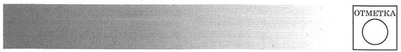
ВАРИАНТ 2
1. На выборах в Государственную думу, состоявшихся в 1907 г., победу одержали октябристы. Для партии октябристов это был большой успех, так как по результатам предыдущих выборов большинство в Думе было у трудовиков и кадетов. Укажите порядковый номер Государственной думы, выборы в которую прошли в 1907 г. Укажите фамилию одного любого Председателя этой Государственной думы. Почему на выборах 1907 г. победа досталась октябристам? Назовите одну причину.
2. Существует точка зрения, что, несмотря на определённые успехи, аграрная реформа П.А. Столыпина оказалась неудачной. Приведите два аргумента в подтверждение данной точки зрения.
3. Прочитайте отрывок из сочинения историка и выполните задания.
...Было стремление поднять чисто живописную сторону художественного произведения над содержанием, так же как в музыке раздавалось одновременно требование поднять чисто звуковую сторону над «программой» музыкального произведения. Но ____ шёл дальше. Как и в литературе, дело не ограничилось преимущественными заботами о форме. Нападения были направлены не только на «плохую живопись» передвижников, но — и главным образом — на содержание, на тенденциозность их тематики, связанной с их «позитивным» мировоззрением. Поэтому и задачей новой школы становилось заменить это содержание другим — противоположным. Передвижники занимались злобой дня. Уйти от злобы дня становилось задачей нового направления.
Собственно, сами организаторы ____ ушли не очень далеко.
Бенуа, Сомов, Лансере сосредоточились на изучении недавнего прошлого, именно петербургского искусства, и через него перешли к художественной реставрации его первоисточника — французского искусства XVIII в. От Царского Села к Версалю, от русских петиметров [щёголь] к французским маркизам — таков круг их тематики.
Запишите название объединения художников, дважды пропущенное в отрывке. Напишите фамилию одного представителя другого объединения художников, названного в отрывке.
Используя отрывок, напишите две особенности указанного вами объединения художников, отличающие его от другого названного в отрывке.
Назовите одно литературное течение (направление), появившееся в тот же период, что и указанное вами объединение художников, и одного представителя этого течения. Укажите одну характерную отличительную черту названного вами течения.
4. Сравните состав, деятельность, программные установки партий кадетов и октябристов. Самостоятельно сформулируйте линии (критерии) сравнения. Приведите одну общую характеристику и два различия. Заполните таблицы.
Общее
|
Линии (критерии) сравнения |
Кадеты и октябристы |
Различия
|
Линии (критерии) сравнения |
Кадеты |
Октябристы |
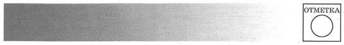